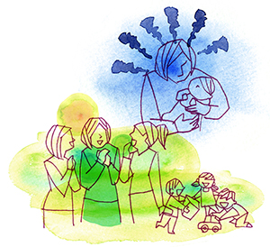

強迫性障害6
〜錯乱から克服へ （ステキなママになりたかったのに……）〜
（強迫神経症（育児ノイローゼ・赤ちゃんを殺すのではないかという恐怖））
松田 明子（仮名）30代・主婦（体験フォーラム会員）
産後に壊れた私
妊娠中から、私には夢がありました。お腹の子を大切に、愛情をたくさん注いで、私自身も賢く、ステキなママになろう、と。しかし、産後私の夢、理想は全て崩れてしまいました。実家の母がうつ病であり、他の家族にも大きな悩みが集中していました。でも、それは妊娠中から分かっていました。そんな家族を放っておいたわけではありません。
私は自分の大きな理想がズルズルと壊れていくことの方が恐ろしく、育児自体に自信が無くなり、恐怖と不安で一杯でした。
母乳神話…、何としても母乳で育てたかった私は、まさか自分に育児能力の無いことが受け入れられませんでした。毎日努力を重ね、頑張りました。でも、自分の思うようには行かず、その他の家事もめちゃくちゃでした。「私だけ、どうして上手くいかないんだろう…。育児書に載っているママ達と全然違う…。他のママは母乳も出が良く、スムーズに育児が進んでいるのに、何で！？」毎日毎日、母乳のことだけ考え、そして落ち込み、どんどん私は疲れ壊れていきました。
恐ろしい観念が出る
育児に挫折感を抱き、もう子育てなんてやめてしまいたい……、そう思う毎日でした。元来人に頼るのが苦手な私。でも、保健婦さんに何度も相談しましたし、産婦人科で母乳の講座も受けました。それでも、自分の欲している「答え」がみつからなったのです。
「このままのあなたの育児で大丈夫よ」という言葉が、誰からももらえなったのです。しかし、その時の私は既に手遅れだったのです。ついに「その時」が来ました。母乳が出ない上、娘が飲んでくれないという時期が続き、もう毎日が怖くて怖くてたまりませんでした。そんなある朝……、やっぱり母乳を飲まない娘に対して、ふっと娘の首を支えていた手に目がいきました。「この首……、絞めたらどんなになるんだろう……」と思ったのです。絞めるつもりは毛頭ありませんでした。でも、その瞬間自分が抱いた感情に驚き、体中の毛が逆立ったのを覚えています。こんな感情を抱いた私は、もはや母の資格はない……、一度だとしても、それはもう消えない。人間としてもう終わりだ。娘を育てていく自信、意欲を失いました。もう自分を受け入れられなくなりました。それから、ふっとした瞬間に「首を絞めたら……」という観念が頻繁に出るようになり、挙句の果てには、「殺す！」という観念も出始めました。出るたびに、「いやいや、そんなことは考えてはいけない。これは私が思っていることじゃない。もし、子どもを殺害してしまったら……、誰もそんなことを考える母親はいない！私は一体どうしたっていうの！」と、必死で振り払いました。でも、観念はどんどん恐ろしいことになっていきました。
「娘を殺せ！」、「大病になって死んだらいいんだ」、「今ならやれるぞ！」、「家に帰ったら殺そう！」、涙を流しながら、こんな観念ばかりが脳裏をかすめていきました。もう終わりだ……。
出会い
こんな私ですから、主人も心配をして精神病院に行きました。
それでも、なんとか出るようになった母乳を最後まであげたいと思い、1年2ヶ月で卒乳。翌日から服薬を始めました。「強迫性障害」って、何だろう。やっぱり私は病気だったんだ、薬を飲めば2、3ヶ月で治るだろう。そんな思いでした。
ただ服薬しても、毎日毎日、恐ろしい観念が24時間中、私を襲いました。もう……耐えられない、もう……消えたい（死にたい）。
そんなある日、主人が森田療法のサイトで、私と似た方の克服談を見せてくれました。嬉しかったのを覚えています。克服談…？私も治るの？でも、森田療法って何だろう……。やがて、メンタルヘルス岡本記念財団の体験フォーラムに出会いました。
最初の一歩
通院しながら、薬を服用し、自分の頭は「首を絞める」「殺す」という声がいつも響く中、体験フォーラムに入会。正直、期待というよりも、私と同じタイプの方が治った！という情報を得たかったのです。その方法を身につけたい。
でも、自分と同じタイプの方を探すばかりで、他の方の書き込みを読みませんでした。正直……、私ほど辛い症状を抱えた人はいないんじゃないか……、とガッカリしました。
でも、粘り強く支えてくれた体験フォーラムの管理人さん。「あなたにならできますよ」という言葉。私は信じてみようと思いました。
森田正馬先生の「神経質講義」を耳から聞き、何度も何度も聞きました。そう長くはかからなかったと思います。自分の、この説明のつかない恐ろしい症状の発症理由が分かったのです。神経質……、そう言われて育ってきました。自分の抱いた不快な感情を異常視し、それを振り払おうと葛藤する。意識すればするほど、どんどん悪化する。
一番驚いたのは、こんな私が「健康人」だと言われたことです。でも、森田先生の断定した力強い口調でそう言われると、もしかすると私も神経症が克服できるかも……。（精神病と言われたが…）
フォーラムでは、強迫観念に目を向けるのではなく、目の前のやるべきことに手を出して、というアドバイスに心打たれました。こんな私ですが、その頃から行きたかった育児サロンに行くことにしました。こんな世にも恐ろしい母だけど、見た目だけでも母親らしいことがしたい。劣等感を抱きながらも、育児サロンに通うようになって、私はメキメキ良くなりました。
あるがままとは……
症状はあるけれど、何とか生活ができている。でも、「あるがまま」って何だろう……。その頃の私は、「あるがまま」になりさえすれば楽になり、治るのだと思っていました。そもそも、治るという表現はないのに…。いわゆる、「あるがまま地獄」に落ち込みました。
日常生活において、「首をしめるかも」「殺す」と言った観念をそのままにして「あるがまま」に受け入れる。これは、非人間的なことではないか？この観念を受け入れることは、「殺人者」になるのでは？と。またある時は、先回りして、観念が出ると同時に呪文を唱えるようにしました。でも、これは相当な気力を使い、むしろ苦しいのです。観念を消して、それから正しい感情を押し付けても、何にもなりませんでした。
フォーラムでは毎日日記を書き、管理人さんがこれを読みなさいと言う森田先生の教えを学び続けました。一度読んだくらいではちっとも頭に入ってこないので教えを朗読してそれを録音していきました。そうすると掃除でも家事でも育児でもなんでもしながら耳から学ぶことができます。
それと同時に、娘も大きくなり、育児サロンの他に、プレ幼稚園にも通い始めました。いつ頃からでしょうか……。随分遠回りしました。「あるがまま」なんて存在しないこと、それを意識していること自体、「あるがまま」に囚われているのだ……、と。出てくる観念、感情は自然なもの、それは変えられない、いいや、変わらなくていい、と。
理解されたい
観念が出てきても、それは自分の自然な感情であり、振り払う必要はない。観念が出てきても、「（首が）気になるんだから、仕方ないよね」と流すようにしました。そうすると、自然と楽になりました。服薬こそしていましたが、森田先生の言葉が、常に心にありました。
そのまま順調にいけば良かったのですが、私にはどうしても納得のいかないことがありました。そもそも、私が神経症となったのは、産後の家族環境が悪かったからではないか？家族は私のこの苦しみと努力を知っているのか？そんな意地悪な心が芽生えてきました。何度も家族とぶつかりました。
そんな私に、管理人さんは言ってくれました。「神経症の苦しみとか、辛さっていうのは、そもそも他の人に理解されるに値するものかな？それっておごりじゃないかな？」と……。まだまだ修養が足らないことに気づきました。
私の経験と思い、それをフォーラムに活かそう。まだまだ未熟な私を、「克服者」として認めて下さった管理人さん。私はこうして「克服者」となりました。
本当の克服とは
「克服」と宣言してしまったからには、そう振舞わなければいけません。苦労もありました。一つ大きなきっかけがありました。フォーラム内での「交流会」に参加したことです。皆さんそれぞれ症状は違いましたが、とても良い刺激を受けました。私は「一人ではなかった！」ことに気づきました。

一人ひとりの神経症の苦しみ、悩みは異なります。でも、同じ神経症を経験した者として、これだけは言えるのです。どうぞ今の自分を責めず、森田先生の言葉に身をゆだねて下さい。頭でいくら考えても分かりにくいですよね。執着心があってもいいんです。これは、他の誰にも渡したくない「自分だけのダイヤの輝き」ですから。神経質という気質を持って生まれたことを、当初は恨みました。これが一生続くのか……と。でも、今の私は違います。森田先生とともに、人間学の再教育をしていますから、何事にも取り組む姿勢が違います。以前であれば、「絶対に失敗しないように」「こうあるべきだ」という思いが強かったのですが、もちもん今も多少はあります。でも、「失敗して当然」「どんなことを感じてもいいんだ」と思うようになりました。これは育児においても、人との接し方にも通用します。
「より良く生きたい」と強く願うがゆえに、神経症となる方が多いですね。神経質ゆえの「執着やこだわり」は、裏を返せば「自分が元来大切にしたいもの」なんです。私のこのこだわりは、キラキラと輝くものなのです。 私は「克服者」としてこれからも頑張っていきます。神経症なんかに負けるもんかと。